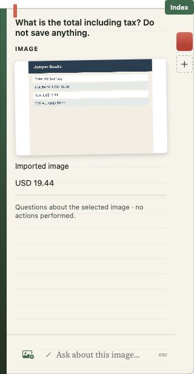
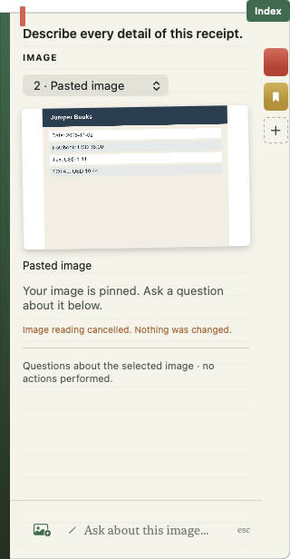
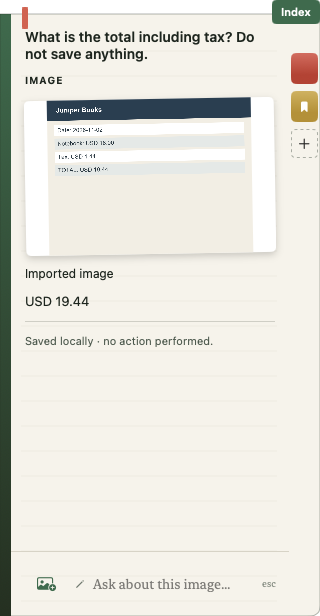

2026-09-13T22:22:44.766275+00:00
5/5 native workflow checks passed.
Validation build running alone; /Applications/MeetingIntro.app unchanged. Margin enabled using process launch argument.
| Check | Result | Evidence |
|---|---|---|
| Finder drag into notebook | pass | Receipt imported using native pointer drag after dismissing the Quick Look overlay. |
| Native question submission | pass | Typed into the writing field; observed reading status and USD 19.44 answer. |
| Clipboard image paste | pass | Second image imported through Command-V; old answer cleared. Prior clipboard contents restored. |
| Cancel active image reading | pass | Native Cancel returned to editable page with cancellation message; local API reported no loaded models. |
| Ribbon save and Index reopen | pass | Saved first receipt page, pasted another image and cancelled a question, then reopened saved page through Index. Original question, source and USD 19.44 answer restored. |


